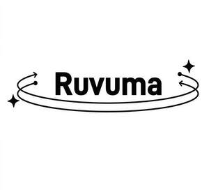

Trade Mark Journal No.2026/008 20 February 2026
UK00004336334 6 February 2026 (12,20,21,22)

- Class 12
- Portable children’s seats for vehicles; Handling carts; Vehicle rooftop cargo and luggage carriers; Electric bicycles; Dining cars; Camping cars; Bicycles; Scooters; Lawn tractors; Baby carriages; Balance bicycles [vehicles]; Hand carts; Starters for land vehicles; Safety seats for children; Children's safety seats for vehicles; Pumps for inflating pneumatic tyres; Horticultural tractors; Electric motor cycles; Pet strollers; Unmanned aerial vehicles; Carts for garden hoses; Children's bicycles; Perambulators for babies; Electrically-powered wheelchairs; Folding hoods for vehicles; Electrically powered scooters; Wheelchairs for the disabled; Pedal scooters; Storage containers adapted for use in vehicles; Power rumble seats.
- Class 20
- Cat trees; Screens [furniture]; Scratching posts for cats; Bassinets; Racks [furniture]; Air beds, not for medical purposes; Playpens for babies; Nesting boxes for household pets; Mirrors [looking glasses]; Mats for infant playpens; Massage tables; Lockers [furniture]; Infant walkers; Furniture shelves; Furniture of metal; Furniture; Dinner wagons [furniture]; Desks; Cupboards; Cots for babies; Trolleys [furniture]; Towel stands [furniture]; Coatstands; Tea trolleys; Trays, not of metal; Chests of drawers; Chests for toys; Chairs [seats]; Sideboards; Shelves for storage.
- Class 21
- Stands for clothes irons; Cooking pots, non-electric / Non-electric cooking pots; Kitchen utensils; Kitchen containers; Ironing boards; Insulating flasks; Mops; Grill supports; Gloves for household purposes; Utensils for household purposes; Toilet cases; Drying racks for laundry; Dish drying racks; Drinking bottles for sports; Stew-pans; Cups; Portable potties for children; Cosmetic utensils; Containers for household or kitchen use; Cleaning instruments, hand-operated; Pots; Cauldrons; Carpet sweepers; Portable cool boxes, non-electric; Place mats, not of paper or textile; Beaters, non-electric; Baskets for household purposes; Mess-tins; Baby baths, portable; Litter boxes for pets.
- Class 22
- Netting for protection against birds and insects; Camping swags; Nets; Tents; Grasses for upholstering; Dust sheets; Down [feathers]; Covers for camouflage; Car towing ropes; Cables, not of metal; Braces, not of metal, for handling loads; Bivouac sacks being shelters; Bindings, not of metal; Awnings of textile; Awnings of synthetic materials; Animal feeding nets; Wadding for padding and stuffing upholstery; Vehicle covers, not fitted; Thread, not of metal, for wrapping or binding; Tarpaulins; Straw for stuffing upholstery; Straps, not of metal, for handling loads; Snares [nets]; Sacks for the transport and storage of materials in bulk; Padding materials, not of rubber, plastics, paper or cardboard; Packing [cushioning, stuffing] materials, not of rubber, plastics, paper or cardboard; Outdoor blinds of textile; Laundry bags; Hammocks.
CLICKCRAFT (PTY)LTD
Representative: YH Consulting Limited